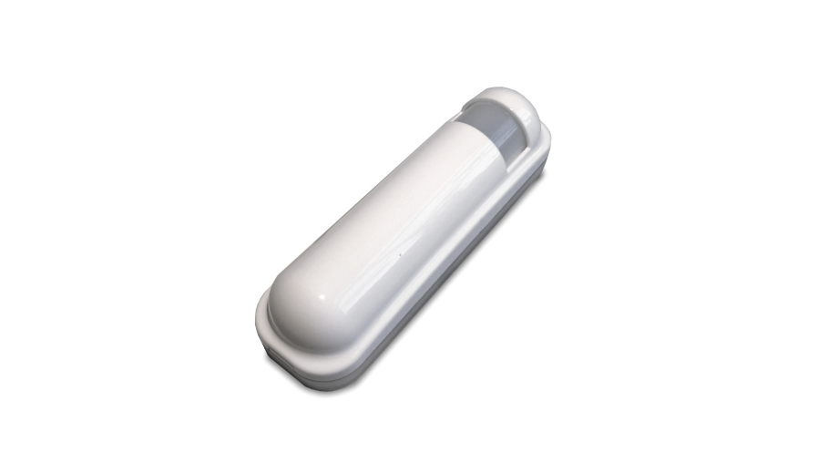
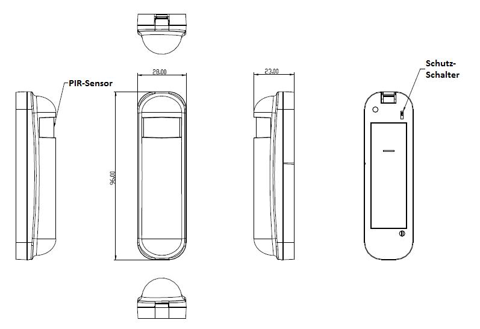

PHI_PSP01
Firmware Version : 1.0 |
 |
Kurzinfo
S Dieses Gerät ist ein Z-Wave-Sensor. Die Inklusion und Exklusion wird durch dreifaches Klicken auf des Manipulationsschutz-Tasters auf der Rückseite des Gerätes bestätigt.
Weitergehende Informationen finden sich in den jeweiligen Abschnitten dieses Handbuches.
Was ist Z-Wave?
Dieses Produkt entspricht dem Z-Wave-Standard. Z-Wave ist der internationale Funkstandard zur Kommunikation von Geräten im intelligenten Haus. Z-Wave-Geräte funken in Europa auf der Frequenz von 868.42 MHz.Z-Wave ermöglicht eine sichere und stabile Kommunikation indem jede Nachricht vom Empfänger rückbestätigt wird (Zweiwege-Kommunikation) und alle netzbetriebenen Geräte Nachrichten weiterleiten (Routing) können, wenn eine direkte Funkbeziehung zwischen Sender und Empfänger gestört ist.
Dank Z-Wave können Produkte unterschiedlicher Hersteller miteinander in einem Funknetz verwendet werden. Damit ist auch dieses Produkt mit beliebigen anderen Produkten anderer Hersteller in einem gemeinsamen Z-Wave Funknetz einsetzbar.
Z-Wave unterscheidet zwischen Controllern und Slaves. Slaves sind entweder Sensoren S, die Daten ermitteln oder Aktoren A, die Aktionen ausführen (Sensoren und Aktoren sind mitunter in einem Gerät vereint). Controller sind entweder statische netzgespeiste Controller C (auch IP-Gateways genannt) oder mobile batteriebetriebene Controller (Fernbedienungen, Batteriewandschalter)R. Damit ergeben sich eine Reihe prinzipieller Kommunikationsmöglichkeiten in einem Z-Wave-Netz:

- Controller steuern Aktoren.
- Aktoren melden Änderungen ihres Schaltzustandes
- Sensoren melden Messwerte oder Statusänderungen an Controller
- Sensoren steuern Aktoren direkt bei Ereignissen
- Aktoren steuern andere Aktoren
- Fernbedienungen erzeugen Ereignisse in einem statischen Controller, die zum Beispiel zum Steuern von Szenen genutzt werden
- Fernbedienungen steuern Aktoren
Controller können in einem Z-Wave Netzwerk zwei unterschiedliche Rollen einnehmen. Es gibt immer genau einen Primärcontroller der das Netzwerk steuert und Geräte in das Netzwerk inkludiert oder aus dem Netzwerk exkludiert. Dieser Controller kann weiter Nutzerfunktionen - zum Beispiel Tasten - besitzen. Alle anderen Controller mit Nutzerfunktionen erfüllen keine Managementaufgaben. Sie heißen Sekundärcontroller. Trotzdem verfügen sie - sozusagen als Backup - über alle notwendigen Informationen über das Netz. Das Übersichtsbild zeigt, das - batteriegestützt - Sensoren nicht direkt mit - batteriebetriebenen - Fernbedienungen kommunizieren. Sie senden nur Daten an statische Controller oder steuern Aktoren direkt.
Produktbeschreibung
Der Z-Wave 3 in 1 Sensor ist mit drei verschiedenen Sensoren ausgestattet:
- PIR/Bewegungsmelder
- Temperatur
- Lichtsensor
Der Detektor kann als ein Sicherheitsgerät oder zur Heimautomatisierung genutzt werden. Als Sicherheitsgerät kann der Detektor Veränderungen der Infrarot-Strahlungsmenge wahrnehmen. Wenn sich eine Person im Sichtfeld befindet oder sich durch dieses bewegt, wird ein Funksignal abgegeben um einen Alarmzustand zu signalisieren um damit Einbrecher abzuschrecken. Alternativ kann der Detektor als Z-Wave Controller fungieren und er kann so konfiguriert werden, dass er sowohl Veränderungen der Infrarot-Strahlungsmenge, als auch die Lichtstärke misst. Wenn die Nacht hereinbricht, ist die Lichtstärke der Umgebung geringer als der Standardwert. Wenn sich jetzt eine Person durch das Sichtfeld des Sensors bewegt, wird ein Funksignal übertragen, um die verbundenen Lampen anzuschalten um für bessere Beleuchtung zu sorgen. Jedes Mal wenn der PIR Sensor auslöst, sendet der Sensor auch Temperatur und Helligkeitswerte.
Batterien
Dieses Gerät wird mit Batterien betrieben. Nur Batterien des angegebenen Typs verwenden. Niemals alte und neue Batterien im gleichen Gerät vermischen. Gebrauchte Batterien enthalten gefährliche Stoffe und dürfen nicht mit dem Hausmüll entsorgt werden!
Batterietyp: 1 * CR123A
Installationsanleitung

- Öffnen Sie das Gehäuse indem Sie die Gehäusevorderseite abnehmen.
- Legen Sie die mitgelieferte CR123A Batterie in das Batteriefach, und schließen Sie das Gerät wieder.
- Befestigen Sie das Gerät mit Hilfe der Schrauben oder des doppelseitigen Klebebandes in einer Höhe von ca. 2m. Um sicherzustellen, dass das Gerät seine volle Funktionsfähigkeit erbringen kann, bringen Sie das Gerät in eine Position, die eine große Reichweite im Raum ermöglicht.
Verhalten des Gerätes im Z-Wave Netz
I Im Auslieferungszustand ist das Gerät mit keinem Z-Wave-Netz verbunden. Damit es mit anderen Z-Wave Geräten kommunizieren kann, muss es in ein bestehendes Z-Wave Netz eingebunden werden. Dieser Prozess wird bei Z-Wave Inklusion genannt. Geräte können Netzwerke auch wieder verlassen. Dieser Prozess heißt bei Z-Wave Exklusion. Beide Prozesse werden von einem Controller gestartet, der dazu in einen Inklusion- bzw. Exklusion-Modus geschaltet werden muss. Das Handbuch des Controllers enthält Informationen, wie er in diese Modi zu schalten ist. Erst wenn der Controller des Z-Wave Netzes im Inclusion-Modus ist, können Geräte hinzugefügt werden. Das Verlassen des Netzes durch Exklusion führt zum Rücksetzen dieses Gerätes in den Auslieferungszustand.
Zur Bestätigung von Inklusion und Exklusion wird der Manipulationsschutz-Taster auf der Rückseite des Gerätes dreimal schnell hintereinander gedrückt.
Bedienung des Gerätes
Der Bewegungsmelder sendet ein Funksignal bei erkannter Bewegung. Nachdem das Gerät in Betrieb genommen wurde, benötigt es einige Minuten, bis es voll einsatzbereit ist und Bewegungen richtig erkennt.
Der Multisensor ist mit einem Schutzschalter ausgestattet, der beim Entfernen des Gerätes einen Alarm auslöst.
Node Information Frame
NIF Der Node Information Frame ist die Visitenkarte eines Z-Wave Gerätes. Es ist ein spezielles Datenpaket, in dem der Gerätetyp sowie die Funktionen des Gerätes bekanntgemacht werden. Inklusion und Exklusion eines Gerätes wird von diesem mit einem Node Information Frame beantwortet. Zusätzlich kann der Node Information Frame für bestimmte Konfigurationsprozesse des Z-Wave Netzes - zum Beispiel das Setzen von Assoziationen - benötigt werden.
Das dreimalige schnelle Drücken des Manipulationsschutz-Tasters auf der Rückseite des Gerätes führt zum Aussenden eines Node Information Frame.
Assoziationen - wie werden andere Geräte gesteuert?
A Z-Wave Geräte können andere Geräte direkt steuern. Diese direkte Steuerung heißt in Z-Wave Assoziation. In den steuernden Geräten muss dazu die Geräte-ID des zu steuernden Gerätes hinterlegt werden. Dies erfolgt in sogenannten Assoziationsgruppen. Eine Assoziationsgruppe ist immer an ein Ereignis im steuernden Gerät gebunden (Tastendruck oder Auslösen eines Sensors). Bei Eintritt dieses Ereignisses wird an alle in einer Assoziationsgruppe hinterlegten Geräte ein Steuerkommando gesendet.
Assoziationsgruppen:
| 1 | Gruppe 1 ist für empfang der Reports wie ausgelöster Event, Temperatur, Helligkeit usw. (max. Anzahl Geräte: 7) |
| 2 | Gruppe 2 ist für Lichtsteuerung, das Gerät sendet “Basic Set” Kommandos zu dieser Gruppe (max. Anzahl Geräte: 7) |
Konfigurationseinstellungen
Z-Wave Produkte können direkt nach der Inklusion im Netz verwendet werden. Durch Konfigurationseinstellungen kann das Verhalten des Gerätes jedoch noch besser an die Anforderungen der Anwendung angepasst und zusätzliche Funktionen aktiviert werden.
WICHTIG: Manche Steuerungen erlauben nur die Konfiguration von vorzeichenbehafteten Werten zwischen -128 und 127. Um erforderliche Werte zwischen 128 und 255 zu programmieren, muss der gewünschte Wert minus 256 eingegeben werden. Beispiel: um einen Parameter auf einen Wert von 200 zu setzen, müsste der Wert 200-256 = -56 eingegeben werden, wenn nur positive Werte bis 128 akzeptiert werden. Bei Werten von 2 Byte Länge wird die gleiche Logik angewandt: Werte über 32768 werden als negative Werte angegeben
| Wert | Beschreibung |
|---|---|
| 255 | 0xFF(-1) schaltet Licht ein. (Voreingestellt) |
| 1 — 100 | Für Dimmer 1 bis 100 Beleuchtungsstärke |
| Wert | Beschreibung |
|---|---|
| 0 | 0 bedeutet PIR deaktiviert; |
| 1 — 99 | 1 geringste Empfindlichkeit; 99 höchste Empfindlichkeit (Voreingestellt 70) |
| Wert | Beschreibung |
|---|---|
| 0 | 0 bedeutet Helligkeitsabhängiges Einschalten deaktiviert; Licht nie einschalten. |
| 1 — 100 | 1 dunkelste Stufe. 99 hellste Stufe. 100 bedeutet Helligkeitsabhängiges Einschalten deaktiviert; Licht immer einschalten (Voreingestellt 99) |
| Wert | Beschreibung |
|---|---|
| 0 — 127 | Bit 0: 1 Security Modus aktiviert 0 Home Automation Modus aktiviert. Bit 1: 1 Test Modus aktiviert; 0 Test Modus deaktiviert Bit 2: reserviert, immer 1. Bit 3: Festlegen der Temperatureinheit; 0: Fahrenheit, 1:Celsius Bit 4: Deaktivieren des Beleuchtungs-Reports nach einem ausgelösten Event. Bit 5: Deaktivieren des Temperatur-Reports nach einem ausgelösten Event. (Voreingestellt 0) |
| Wert | Beschreibung |
|---|---|
| 0 — 127 | Bit 0: reserviert, immer 1. Bit 1: deaktiviert die integrierte PIR Beleuchtung. Bit 2: reserviert, immer 1. Bit 3: reserviert. Bit 4: reserviert. Bit 5: reserviert. Bit 6: aktiviert Temperatur Messung. Wenn aktiviert wird bei Temperaturänderung von 3° ein Temperatur-Report gesendet. Ebenfalls wird ein Temperatur-Report (aller 64 Sekunden) gesendet, wenn diese über 140° Fahrenheit steigt. (Voreingestellt 4) |
| Wert | Beschreibung |
|---|---|
| 3 — 127 | 8 Sekunden pro Tick, minimale Verzögerung 24 Sekunden (3 Ticks = 24 Sekunden). (Voreingestellt 3) |
| Wert | Beschreibung |
|---|---|
| 4 — 127 | 8 Sekunden pro Tick, minimal 32 Sekunden, Standard 4 Ticks = 32 Sekunden (Voreingestellt 4) |
| Wert | Beschreibung |
|---|---|
| 1 — 127 | 30 Minuten pro Tick, minimal 30 Minuten, Standard sind 12 Ticks = 6 Stunden (Voreingestellt 12) |
| Wert | Beschreibung |
|---|---|
| 1 — 127 | 30 Minuten pro Tick, minmal 30 Minuten, Standard sind 12 Ticks = 6 Stunden (Voreingestellt 12) |
| Wert | Beschreibung |
|---|---|
| 1 — 127 | 30 Minuten pro Tick, minimal 30 Minuten, Standard 12 Ticks = 6 Stunden (Voreingestellt 12) |
Kommandoklassen
Unterstützte Kommandoklassen- Battery (Version 1)
- Basic (Version 1)
- Wake Up (Version 2)
- Association (Version 2)
- Version (Version 1)
- Configuration (Version 1)
- Binary Sensor (Version 2)
- Multilevel Sensor (Version 5)
- Manufacturer Specific (Version 2)
Technische Daten
| Batterietyp | 1 * CR123A |
| Explorer Frames | Ja |
| SDK | 6.1 |
| Geräteart | Slave with routing capabilities |
| Allgemeiner Z-Wave-Gerätetyp | Binary Sensor |
| Spezieller Z-Wave-Gerätetyp | Routing Binary Sensor |
| Router | Nein |
| FLiRS | Nein |
| Firmware Version | 1.0 |
Erläuterung Z-Wave-spezifischer Begriffe
- Controller... ist ein Z-Wave-Gerät mit erweiterten Fähigkeiten zur Verwaltung eines Netzes. Dies sind in der Regel Gateways oder Fernbedienungen. Batteriegespeiste Wandschalter können auch Controller sein.
- Slave... ist ein Z-Wave-Gerät mit erweiterten Fähigkeiten zur Verwaltung eines Netzes. Es gibt Sensoren, Aktoren und auch Fernbedienungen als Slaves.
- Primärcontroller (engl. Primary Controller)... ist der zentrale Netzverwalter des Z-Wave-Netzes.
- Inklusion (eng. Inclusion)... ist der Prozess des Einbindens eines neuen Gerätes ins Z-Wave-Netz.
- Exklusion (engl. Exclusion)... ist der Prozess des Entfernens eines Gerätes aus dem Z-Wave-Netz.
- Assoziation (engl. Association)... ist eine Steuerbeziehung zwischen einem steuernden und einem gesteuerten Gerät. Die Information dazu wird im steuernden Gerät in einer Assoziationsgruppe hinterlegt.
- Wakeup Notifikation (engl. Wakeup Notification) ... ist eine spezielle Funknachricht, mit der ein batteriegespeistes Gerät bekanntmacht, daß es im Aufwachstatus ist und Z-Wave-Nachrichten empfangen kann.
- Node Information Frame... ist eine spezielle Funknachricht, mit der ein Z-Wave-Gerät seine Geräteeigenschaften bekanntgibt.
Entsorgungshinweis
Dieses Gerät enthält Batterien. Bitte beachten Sie die gültigen Entsorgungsvorschriften für Batterien.
Das ist ein elektrisches Gerät. Es kann kostenfrei bei entsprechenden Annahmestellen abgegeben werden.